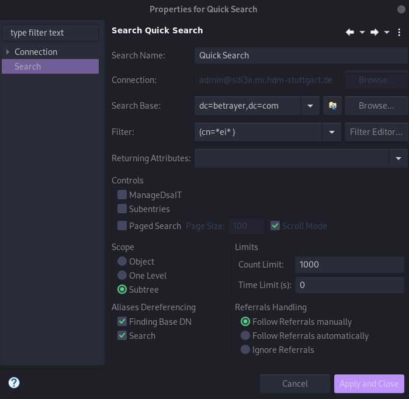

Due to the absence of dig, this was installed with the following command
$ apt install dnsutilsMX:
$ dig +nocmd hdm-stuttgart.de mx +noall +answer:
hdm-stuttgart.de. 2752 IN MX 10 mx2.hdm-stuttgart.de.
hdm-stuttgart.de. 2752 IN MX 10 mx4.hdm-stuttgart.de.
hdm-stuttgart.de. 2752 IN MX 10 mx3.hdm-stuttgart.de.
hdm-stuttgart.de. 2752 IN MX 10 mx1.hdm-stuttgart.de.$ dig +noall +answer 10 mx2.hdm-stuttgart.de.:
mx2.hdm-stuttgart.de. 3197 IN A 141.62.1.23$ dig +nocmd +noall +answer -x 141.62.1.23:
23.1.62.141.in-addr.arpa. 3142 IN PTR mx2.hdm-stuttgart.de.NS:
$ dig +nocmd hdm-stuttgart.de ns +noall +answer:
hdm-stuttgart.de. 3590 IN NS iz-net-4.hdm-stuttgart.de.
hdm-stuttgart.de. 3590 IN NS iz-net-3.hdm-stuttgart.de
hdm-stuttgart.de. 3590 IN NS dns1.belwue.de.
hdm-stuttgart.de. 3590 IN NS iz-net-2.hdm-stuttgart.de.
hdm-stuttgart.de. 3590 IN NS dns3.belwue.de.$ dig +noall +answer dns1.belwue.de.:
dns1.belwue.de. 86400 IN A 129.143.2.10$ dig +nocmd +noall +answer -x 129.143.2.10:
10.2.143.129.in-addr.arpa. 86400 IN PTR dns1.belwue.de.CNAME:
$ dig +noall +answer www.spotify.com:
www.spotify.com. 230 IN CNAME edge-web-split-geo.dual-gslb.spotify.com.
edge-web-split-geo.dual-gslb.spotify.com. 80 IN A 35.186.224.25$ dig +noall +answer -x 35.186.224.25:
25.224.186.35.in-addr.arpa. 120 IN PTR 25.224.186.35.bc.googleusercontent.com.Über folgenden Command wurde Bind9 inklusive den Utils installiert: bash apt install bind9 bind9utils
In /etc/bind/ we need to adjust the named.conf.options, for that we need the IP-adress of our domain sdi3a.mi.hdm-stuttgart.de we want to forward. For that we used the following command bash $ dig +nocmd sdi3a.mi.hdm-stuttgart.de +noall +answer: sdi3a.mi.hdm-stuttgart.de. 86400 IN A 141.62.75.103 Now we can enter the ip-adress in the already mentioned file.
To create the foward zone we need to adjust the file named.conf.local which should look like following:
// Do any local configuration here
//
zone "forward" {
type master;
file "/etc/bind/zones/db.forward";
};
zone "103.75.62.141.in-addr.arpa" {
type master;
file "/etc/bind/zones/db.rev-local";
};
// Consider adding the 1918 zones here, if they are not used in your
// organization
//include "/etc/bind/zones.rfc1918";$ mkdir -p /var/cache/bindIn the first step we need to change our directory to bash $ cd /etc/bind $ mkdir zones ##### 1.2.3.1 Configure forward zone We start to configure our forward lookup zone zones/db.forward with
$ vim db.forwardTo get the host record we need to dig sdi4a.mi.hdm-stuttgart.de.
$ dig +noall +answer sdi4a.mi.hdm-stuttgart.de.:
sdi4a.mi.hdm-stuttgart.de. 86400 IN A 141.62.75.104With this information we can adjust our file zones/db.forward which looks like the following
;; db.forward
;; Forward lookup zone
$TTL 604800
$ORIGIN mi.hdm-stuttgart.de.
@ IN SOA ns4.mi.hdm-stuttgart.de. mail.mi.hdm-stuttgart.de. (
01
9H
3H
4W
3H)
@ IN NS ns4.mi.hdm-stuttgart.de.
ns4 IN A 141.62.75.104
www4-1 IN CNAME ns4
www4-2 IN CNAME ns4With the information we became above from the dig command, we can configure our reverse zone:
;; db.rev-local
;; reverse lookup zone
$TTL 604800
@ IN SOA ns4.mi.hdm-stuttgart.de. mail.mi.hdm-stuttgart.de. (
01 ;<serial-number>
9H ;<time-to-refresh>
3H ;<time-to-retry>
4W ;<serial-to-expire>
3H ) ;<minimum-TTL>
@ IN NS ns4.mi.hdm-stuttgart.de.
ns4.mi.hdm-stuttgart.de. IN A 141.62.75.104
To add forward entry for www.w3.org we need the IP-adress which this domain is refering to:
$ dig +nocmd www.w3.org +noall +answer
www.w3.org. 247 IN A 128.30.52.100Now we can add the forwarder in the file /etc/bind/named.conf.options:
forwarders {
141.62.75.103;
128.30.52.100;
};For this we need to set another record in our forward zone etc/bind/zones/db.forward:
mi.hdm-stuttgart.de. IN MX 10 ns4.mi.hdm-stuttgart.de.Test the record via dig:
$ dig +noall +answer mx1.hdm-stuttgart.de.:
mx1.hdm-stuttgart.de. 2714 IN A 141.62.1.22"The Lightweight Directory Access Protocol can be used for queriyng and modifying information from distributed directory services."
The difference between these two protocols are the encrytpion, LDAPS is encrypted via SSL and running on the default port 636, LDAP is encrypted via STARTTLS or decrypted and running on default port 389.
("Editorial - LDAP", 2021)It stands for domain component and represents the namespaces of an object (Willeke, 2019).The ObjectClass is a LDAP Schema element AttributeType (Willeke, 2019).Each LDAP Entry in the Directory Information Tree has an ObjectClass attribute. The Values of this attribute can be modified but not removed (Willeke, 2019).No, the structure must conforms the constraint defined by the LDAP Schema (Willeke, 2019).Bind is used to authenticate clients to the directory server.
There are three elements inlude in the request:
1. LDAP protocol version
2. Distinguished Name (DN)
3. Credentials for user authentication
At an anonymous bind the above points 2. and 3. are submitted as an empty string.
(Wilson, -)"Lightweight Directory Access Protocol (LDAP) Transactions is define din RFC 5805 and is defined as "Experimental".
As with distinct update operations, each transaction has atomic, consistency, isolation, and durability properties ACID."
(Willeke, 2017)For distribution reasons the LDAP-database can be distributed to several servers. There exists one master, on which write-operations are allowed, at the others can only pull the changes from the master (Anonym, 2019).LDAP is very suitable in cases of high read rates and low write rates (write-once-read-many-times).
Furthermore relational databases like SQL requieres a detailed knowledge about the data structure, which isnt the case when it comes to LDAP.
(ZyTrax, 2019)The format is organized with abjects and attributes. The LDIF datas describes the directory structure which is needed for exchange
("Editorial - LDIF", 2021)There are several filters in LDAP, with these filters its possible to add criterias to an object search.
(Föckeler, -)The LDAP search scope indicates the set of entries at or below the BaseDN that may be considered potential matches for a SearchRequest (Willeke, 2019).And: (& (...K1...) (...K2...) (...K3...) (...K4...))
Or: (| (...K1...) (...K2...) (...K3...) (...K4...))
Not: (! (...K1...) (...K2...) (...K3...) (...K4...))Backends do the actual work of storing or retrieving data in response to LDAP requests. Backends may be compiled statically into slapd, or when module support is enabled, they may be dynamically loaded (Open LDAP Foundation, 2021). The risk of a failure will be minimized and the traffic load will be reduced.Willeke, J. (various dates). LDAP Wiki 3. May 2021, from https://ldapwiki.com/wiki
Editorial - LDAP. (2021, April 19). In Wikipedia. https://de.wikipedia.org/wiki/Lightweight_Directory_Access_Protocol
Editorial - LDIF. (2021, April 19). In Wikipedia. https://de.wikipedia.org/wiki/LDAP_Data_Interchange_Format
Bosswell, W. (2003, October 10). ObjectClasses queried 3. May 2021, from https://www.informit.com/articles/article.aspx?p=101405&seqNum=7#:~:text=Domain%20Component%20(DC).,%3DCompany%2Cdc%3Dcom.
Wilson, N. (No datum availabel). The LDAP Bind Operation queried 3. May 2021, from https://ldap.com/the-ldap-bind-operation/
Anonym (2019, September 3). LDAP Wiki 3. May 2021, from https://ldapwiki.com/wiki
ZyTrax Inc. (2019, February 19). LDAP Concepts & Overview 7. May 2021, from http://www.zytrax.com/books/ldap/ch2/
Föckeler, P. (No datum availabel). Das LDAP Scripting Tutorial queried 10. May 2021, from http://www.selfadsi.de/ldap-filter.htm
Open LDAP Foundation. (2021, February 26). OpenLDAP queried 10. May 2021, from https://www.openldap.org/doc/admin25/
When you are authenticated on the LDPA-server, you can see all datas which belongs to your user. When you are not authenticated you can also see all datas with the exception of the matrikelNr.
First we need to install several packages on our server:
$ apt install slapd ldap-utils dialogTo reconfigure slapd we need to type $ dpkg-reconfigure slapd.
After add all entrys in our tree, it look like the following:
version: 1
dn: dc=betrayer,dc=com
objectClass: dcObject
objectClass: organization
objectClass: top
dc: betrayer
o: betrayer.com
dn: cn=admin,dc=betrayer,dc=com
objectClass: organizationalRole
objectClass: simpleSecurityObject
cn: admin
userPassword:: e1NTSEF9UUpzZm96RVFxVTFadEhGN3VrWE96dDNZRi9hc09LaXY=
description: LDAP administrator
dn: ou=departments,dc=betrayer,dc=com
objectClass: organizationalUnit
objectClass: top
ou: departments
dn: ou=software,ou=departments,dc=betrayer,dc=com
objectClass: organizationalUnit
objectClass: top
ou: software
dn: ou=financial,ou=departments,dc=betrayer,dc=com
objectClass: organizationalUnit
objectClass: top
ou: financial
dn: ou=devel,ou=software,ou=departments,dc=betrayer,dc=com
objectClass: organizationalUnit
objectClass: top
ou: devel
dn: ou=testing,ou=software,ou=departments,dc=betrayer,dc=com
objectClass: organizationalUnit
objectClass: top
ou: testing
dn: uid=diana,ou=devel,ou=software,ou=departments,dc=betrayer,dc=com
objectClass: inetOrgPerson
objectClass: organizationalPerson
objectClass: person
objectClass: top
cn: Diana Smith
sn: Smith
uid: diana
dn: uid=daniel,ou=devel,ou=software,ou=departments,dc=betrayer,dc=com
objectClass: inetOrgPerson
objectClass: organizationalPerson
objectClass: person
objectClass: top
cn: Daniel Bean
sn: Bean
uid: daniel
userPassword:: e1NNRDV9QlRqWVBrL2tuSjkrUGNIRk1SeUhBWXdCOHFLeGVMQ2I=
dn: uid=tina,ou=testing,ou=software,ou=departments,dc=betrayer,dc=com
objectClass: inetOrgPerson
objectClass: organizationalPerson
objectClass: person
objectClass: top
cn: Tina Bean
sn: Bean
uid: tina
dn: uid=thomas,ou=testing,ou=software,ou=departments,dc=betrayer,dc=com
objectClass: inetOrgPerson
objectClass: organizationalPerson
objectClass: person
objectClass: top
cn: Thomas Smith
sn: Smith
uid: thomas
dn: uid=frida,ou=financial,ou=departments,dc=betrayer,dc=com
objectClass: inetOrgPerson
objectClass: organizationalPerson
objectClass: person
objectClass: top
cn: Frida Smith
sn: Smith
uid: frida
dn: uid=frederick,ou=financial,ou=departments,dc=betrayer,dc=com
objectClass: inetOrgPerson
objectClass: organizationalPerson
objectClass: person
objectClass: top
cn: Frederick Bean
sn: Bean
uid: frederickAll users with a uid attribute value starting with the letter “b”:
(uid=b*)All entries with either a defined uid attribute or a ou attribute starting with letter “d”:
(|(uid=d*)(ou=d*))All users entries within the whole DIT having a gidNumber value of 100: 
All users entries within the whole DIT having a gidNumber value greater then 1023: 
All users entries within the whole DIT having the substring “ei” in their cn attribute: 
All users entries within the whole DIT having starting with the character “t” in their uid attribute or the gidNumber is equal to 100: 
The entry uid=bean,ou=devel,ou=software,ou=departments,dc=betrayer;dc=com may be extended by the objectclass posixAccount. Construct a LDIF file to add the attributes uidNumber, gidNumber and homeDirectory by a modify/add operation.
uid=bean, ou=devel, ou=software, ou=departments, dc=betrayer, dc=com
changetype: add
objectClass: posixAccount
uidNumber: 42
gidNumber: 1337
homeDirectory: /

$ root@sdi3b:~# telnet sdi3a.mi.hdm-stuttgart.de 389Trying 141.62.75.103...
Connected to sdi3a.mi.hdm-stuttgart.de.
Escape character is '^]'.$ apt-get install libpam-ldapdAfter the installation a window will open, where we can configure the package.
In the following window we need to enter the hostname to our arctive directories. 
After that we need to enter the distinguished name. 
TEXT 
After the configuration the installation of the package will be finished and we need to reboot the VM.
After that we can run request
$ id daniel
uid=42(daniel) gid=1337 Gruppen=1337In the last step we need to create a user and a group accordingly, which we need to assign to the user:
$ groupadd -g 1337 betrayer_software_devel
$ useradd -u 42 daniel
$ usermod -g betrayer_software_devel daniel
$ mkhomedir_helper danielCreate a backup of the OpenLDAP database configuration to an LDIF file.
$ slapcat -b cn=config -l ldap-config.ldifCreate a backup of the OpenLDAP data.
$ slapcat -l ldap-data.ldifCopy the data and configuration backup from the OpenLDAP provider server to the OpenLDAP consumer server.
$ scp {ldap-data.ldif,ldap-config.ldif} root@sdi3b.mi.hdm-stuttgart.de:Now we need to access our consumer server via ssh.
$ ssh root@sdi3b.mi.hdm-stuttgart.deRestore the OpenLDAP provider Data and configs on the consumer server. Stop the LDAP service.
$ systemctl stop slapdEnsure that the LDAP configuration and data directories are empty.
$ rm -rf /etc/ldap/slapd.d/*
$ rm -rf /var/lib/ldap/*Restore the configuration backup.
$ slapadd -b cn=config -l /root/ldap-config.ldif -F /etc/ldap/slapd.d/Restore the LDAP data directories.
$ slapadd -n 1 -l /root/ldap-data.ldif -F /etc/ldap/slapd.d/https://www.python-ldap.org/en/python-ldap-3.3.0/ https://github.com/python-ldap/python-ldap
For the following tasks we need the package apache2, which we can install with the following command:
$ aptitude install apache2After we install the package apache is running per default and can in our case be queried with http://sdi3a.mi.hdm-stuttgart.de/.
When we move the index.html file out of the directory we can discover another page, when we query the adress again. Now we can se an empty table and below that we find the version of our Apache Server, the domain where its hosted and the associated port.
In the next step we povide our own simple webpage which looks like the following:
<!DOCTYPE html>
<html>
<body>
<h1>TEST</h1>
</body>
</html>$ apt install apache2-docIn our case we can find all related files from the packe apache2-doc: bash $ dpkg -L apache2-doc The result is a huge list of file which all belongs to the following path: /usr/share/doc/apache2-doc/manual/
$ pandoc -s -o index.html Software\ Defined\ Infrastructure.mdWe want to store the index.html later in home/sdidoc so we need to create this directroy: bash $ cd /home $ mkdir sdidoc
After that we can transfer our file from the local machine to our hdm vm: bash $ scp index.html root@sdi3a.mi.hdm-stuttgart.de:/home/sdidoc/
Now we need to adjust our config file in /etc/apache2/sites-available/000-default.conf with the following terms:
<Directory /home/sdidoc>
Options Indexes FollowSymLinks Includes ExecCGI
AllowOverride All
Require all granted
Allow from all
</Directory>
Alias "/doku" "/home/sdidoc"To make our change effective we need to restart the apache web service:
$ systemctl reload apache2